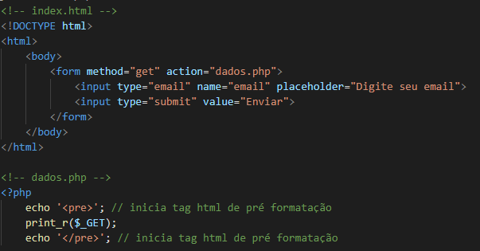
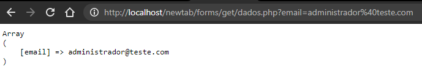
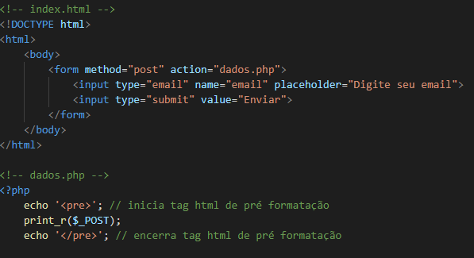
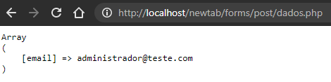

No formulário com action get, os dados são enviados pela url formando uma query string. É muito utilizado em consultas e não é recomendado para informações confidenciais (como senhas, por exemplo), pois os dados ficarão expostos na url. Abaixo temos o código dos arquivos criados para o formulário:
Ao submeter o email no formulário criado, disparamos a action do arquivo dados.php (que apenas exibirá um print com os dados enviados), e a query string é formada a partir do ponto de interrogação, com chave: atributo name do input, que no nosso caso é email; e valor: string digitada e enviada pelo usuário.
NOTA:
Caracteres especiais serão codificados em hexadecimais
seguindo a tabela ASCII. Por exemplo, o caracter @, foi
codificado para %40. Outro ponto importante é que a url
não pode ultrapassar 3000 caracteres.

O formulário com método POST, os dados são enviados no corpo da requisição e não pela url. Deve ser utilizado em cadastros onde precisamos passar dados sensíveis (senhas), por exemplo.

NOTA:
Ao submeter o formulário, a action é chamada e neste
caso, imprime os valores enviados. A url não possui
query string, já que os dados foram enviados no corpo
da requisição.
